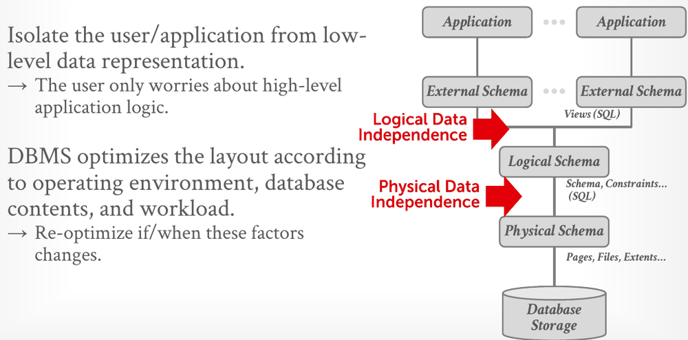
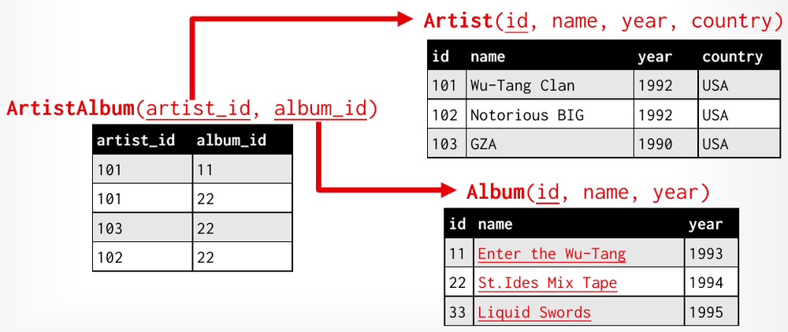
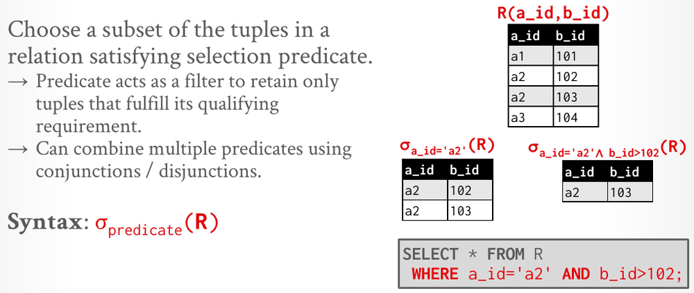
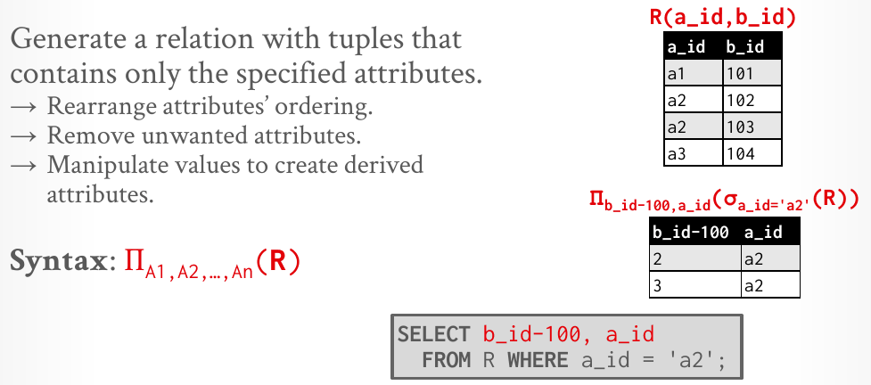
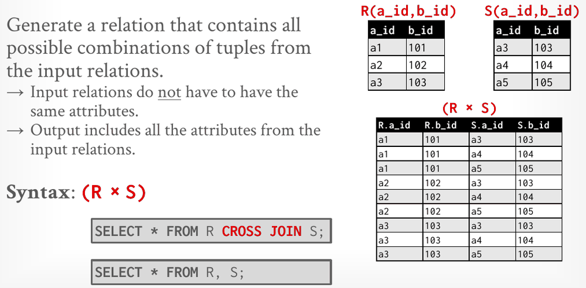
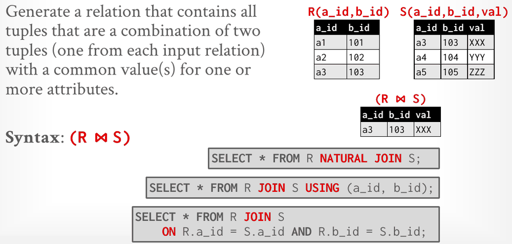

Database Internals in Go · Unit 0 · Lesson 1
The Relational Model & Relational Algebra
Explain what a DBMS adds over flat files, describe data with relations, keys and constraints, and evaluate the seven relational-algebra operators by hand.
The database you'll build in Go stores and queries relations, the data model that CMU's Lecture #01 introduces. Keeping data in plain files breaks down as soon as several programs share it or the machine crashes. Ted Codd's relational model fixes that by separating what the data means from how it's stored, and its relational algebra supplies the primitives a DBMS uses to process queries. You'll meet those operators again in Units 5–6, when you build the query executors.
In this course's Go port, what replaces a C++ RAII page guard, whose destructor releases the page's pin when the guard goes out of scope?
Right after the checkout, you run go test ./... in intro_to_db. Which output means your setup is correct?
What goes wrong with flat files
A database is an organized collection of inter-related data that models some aspect of the real world. The lecture's running example is a digital music store that tracks artists and the albums they released.
The simplest design is a flat file: one CSV file per entity, which the application parses itself. To find the year GZA went solo, the application reads every line of the artist file:
Artist(name, year, country) for line in file.readlines():
"Wu-Tang Clan",1992,"USA" record = parse(line)
"Notorious BIG",1992,"USA" if record[0] == "GZA":
"GZA",1990,"USA" print(int(record[1]))That works for one program and three rows. The lecture lists the questions it can't answer:
- Data integrity. Is the artist's name spelled the same in every album entry? What stops someone from overwriting an album's year with an invalid string? What if an album has several artists? What happens to the albums when you delete their artist?
- Implementation. How do you find one record without reading the whole file? What if a second application, perhaps on another machine, needs the same data? What if two threads write the file at the same time?
- Durability. What if the machine crashes in the middle of an update? How do you replicate the data on several machines for high availability?
Answering these questions is the job of a database system, and this course builds several of the answers: indexes for finding records (Units 3–4), concurrency control for simultaneous writers (Units 7–8), and logging and recovery for crashes (Unit 9).
DBMS, data model, schema
A database management system (DBMS) is software that lets applications store and analyze information in a database. A general-purpose DBMS supports the definition, creation, querying, update and administration of databases according to some data model. The lecture notes warn that people often confuse the two words: MySQL, Oracle, MongoDB and Snowflake are DBMSs, and each manages databases.
A data model is a collection of concepts for describing the data in a database: rules that define the types of things that could exist and how they relate. A schema describes one particular collection of data using a given data model. Without one, as the slide puts it, "you have random bits with no meaning." In Go terms, the data model is like the type system, which fixes what a struct can be, and a schema is like the struct types that one program declares.
The relational model is the data model of most DBMSs and of this course. The others on the lecture's list are key/value, graph, document, wide-column and array/vector models, plus legacy ones such as the hierarchical and network models.
Codd's relational model
In the late 1960s, DBMSs such as IDS, IMS and CODASYL made developers write queries as procedural code. The developer chose the access paths and the execution order based on what the database held at the time. When the data changed, the developer had to rewrite the query code. Slide 25 shows a CODASYL-style procedure that navigates record by record (FIND ALBUM, FIND FIRST APPEARS WITHIN, REPEAT … FIND OWNER) to list the artists on one mixtape. The slide's next build expresses the same request as a short SQL join.
Ted Codd at IBM Research noticed that people rewrote their DBMSs every time they wanted to change the physical layer. In 1969 he proposed the relational model, which defines three concepts:
- Structure: relations and their contents, defined independently of their physical representation. Each relation has attributes, and each attribute has a domain of values.
- Integrity: the database's contents satisfy constraints. For example, a person's age can't be negative.
- Manipulation: a declarative API for accessing and modifying the contents through relations (sets). You specify the result you want, and the DBMS chooses how to compute it.
The relational model provides data independence: it isolates applications from the low-level data representation. The DBMS lays out the data to suit its environment, the contents and the workload, and can re-optimize when any of those change, without breaking the applications.

This course works in the bottom two boxes. Units 1–4 build the physical machinery (pages, files, the buffer pool and indexes), and physical data independence means that none of it changes the answer a query returns.
Relations, tuples and NULL
- A relation is an unordered set of tuples that share the same attributes and represent entities. Because it is unordered, the DBMS can store its tuples in any order it likes. The course uses relation and table interchangeably.
- An attribute is a named component of a relation (a column), and its domain is the set of values it may take.
- A tuple is a set of attribute values (a row). Values are normally atomic, or scalar; the notes add that modern systems also allow lists and nested structures.
- NULL is a special value that belongs to every domain, if the schema allows it. It means the attribute is undefined for that tuple.
- An n-ary relation has n attributes; in table terms, n columns.
Artist(name, year, country)is 3-ary.
Keys and constraints
A relation's primary key uniquely identifies a single tuple. Some DBMSs create an internal primary key if a table doesn't define one. A DBMS can generate unique keys automatically through an identity column: IDENTITY in the SQL standard, SEQUENCE in PostgreSQL and Oracle, AUTO_INCREMENT in MySQL. Slide 30 gives Artist a synthetic id column with the values 101, 102 and 103.
A foreign key says that an attribute in one relation maps to a tuple in another. Usually its value equals the other relation's primary key. A first attempt stores the artist's id in an artist column of Album. That works until "St.Ides Mix Tape", which has three artists and only one cell to hold them. The fix is a cross-reference relation with one tuple per (artist, album) pair:

A constraint is a user-defined condition that must hold for every instance of the database. It can check a single tuple or span relations, and the DBMS refuses any modification that would violate it. Unique-key and referential (foreign-key) constraints are the most common. SQL-92 also has global assertions (CREATE ASSERTION), but they are rarely used because they are too slow.
Here is the music-store schema in SQL DDL (data definition language), with the rows from the figure. Artist is slide 32's table, with its NOT NULL and CHECK constraints and the id key from slide 30; the other two tables follow slide 31. It runs unchanged in DuckDB, which you'll install in the next lesson:
CREATE TABLE Artist (
id INT PRIMARY KEY,
name VARCHAR NOT NULL,
year INT,
country CHAR(60),
CHECK (year > 1900)
);
CREATE TABLE Album (
id INT PRIMARY KEY,
name VARCHAR NOT NULL,
year INT
);
CREATE TABLE ArtistAlbum (
artist_id INT REFERENCES Artist (id),
album_id INT REFERENCES Album (id),
PRIMARY KEY (artist_id, album_id)
);
INSERT INTO Artist VALUES (101, 'Wu-Tang Clan', 1992, 'USA'),
(102, 'Notorious BIG', 1992, 'USA'), (103, 'GZA', 1990, 'USA');
INSERT INTO Album VALUES (11, 'Enter the Wu-Tang', 1993),
(22, 'St.Ides Mix Tape', 1994), (33, 'Liquid Swords', 1995);
INSERT INTO ArtistAlbum VALUES (101, 11), (101, 22), (103, 22), (102, 22);With those rows loaded, each of these statements is rejected. The messages are DuckDB 1.5's:
| Statement | Constraint it violates | DuckDB says |
|---|---|---|
INSERT INTO Artist VALUES (105, 'Old Timer', 1850, 'USA'); | CHECK (year > 1900) | CHECK constraint failed on table Artist … |
INSERT INTO Artist VALUES (101, 'Dup', 1999, 'USA'); | primary key | Duplicate key "id: 101" violates primary key constraint. |
INSERT INTO ArtistAlbum VALUES (104, 11); | foreign key | Violates foreign key constraint because key "id: 104" does not exist in the referenced table |
DELETE FROM Artist WHERE id = 103; | foreign key | … key "artist_id: 103" is still referenced by a foreign key in a different table. … |
The last row answers one of the flat-file questions. With this schema, you can't delete an artist who still has albums, because the DBMS checks the reference for you.
#01 Relational Model & Algebra, slides 28–32: data independence, relations and NULL, then primary keys, foreign keys and constraints on the music-store example.
Procedural vs. declarative languages
A data manipulation language (DML) is the API a DBMS exposes for storing and retrieving information. There are two styles:
- Procedural: the query specifies the high-level strategy for finding the result, based on sets or bags. Slide 33 labels this style relational algebra. The notes' example is a loop that scans every record to count them.
- Non-procedural (declarative): the query says only what data is wanted, not how to find it. The slide labels this style relational calculus. The notes' example is
SELECT COUNT(*) FROM artist.
Relational algebra
Relational algebra is a set of operations that retrieve and manipulate the tuples of relations. It is based on set algebra, so relations are unordered and hold no duplicates. Each operator takes one or more relations as input and outputs a new relation, so operators chain: the output of one is a valid input to the next, the way f(g(x)) works when f and g take and return the same type. Seven operators form the core:
| Operator | Notation | Output | SQL spelling |
|---|---|---|---|
| Select | σp(R) | the tuples of R that satisfy predicate p | WHERE p |
| Projection | ΠA1,…,An(R) | only the listed (possibly derived) attributes | the SELECT list |
| Union | R ∪ S | tuples in either input or both, duplicates removed | UNION |
| Intersection | R ∩ S | tuples in both inputs | INTERSECT |
| Difference | R − S | tuples in R but not in S | EXCEPT |
| Product | R × S | every pairing of an R tuple with an S tuple | CROSS JOIN, or FROM R, S |
| Join | R ⋈ S | pairs that agree on the shared attributes | NATURAL JOIN, JOIN … USING, JOIN … ON |
Select and projection
Select (σ) keeps the subset of tuples that satisfy a predicate. The predicate acts as a filter, and you can combine predicates with conjunctions (∧, and) and disjunctions (∨, or).

102." loading="lazy">WHERE clause (Lecture #01, slide 35).Pitfall
σ is called "select", but it is SQL's WHERE clause. SQL's SELECT list is the next operator, projection.
Projection (Π) outputs tuples that contain only the specified attributes. It can reorder attributes, remove them, or compute derived attributes from them. Because operators chain, you can project the output of a select:

Union, intersection and difference
These three are the classic set operators. Both inputs must have the same attributes, matched by name. Slides 37–39 use two small relations:
| Relation | Tuples |
|---|---|
| R(a_id, b_id) | (a1, 101), (a2, 102), (a3, 103) |
| S(a_id, b_id) | (a3, 103), (a4, 104), (a5, 105) |
| R ∪ S | (a1, 101), (a2, 102), (a3, 103), (a4, 104), (a5, 105): five tuples, because (a3, 103) appears once |
| R ∩ S | (a3, 103) |
| R − S | (a1, 101), (a2, 102) |
Difference is not commutative: S − R is a different relation. Union eliminates duplicates because the algebra works on sets. SQL also has UNION ALL, which keeps duplicates and returns six rows here. The next lesson explains why SQL needs both.
Product and join
Product (×), also called the Cartesian product, outputs every combination of one tuple from each input. The inputs don't need the same attributes, and the output keeps all of them:

A join (⋈) outputs the combinations of one tuple from each input that have common values for one or more attributes. The slide's join is the natural join: it matches on every attribute the two inputs share, and lists each shared attribute once. Here S gains a third attribute, val:

The three spellings find the same match but differ in their output columns. With SELECT *, NATURAL JOIN and USING merge the join columns into one copy each and return 3 columns. ON keeps both copies (a_id, b_id, a_id, b_id, val) and returns 5. That matters whenever output columns are compared by position, as CMU's homework grader does.
Pitfall
FROM R, S on its own is the product R × S, not a join. It becomes a join only when a WHERE predicate such as R.a_id = S.a_id filters the pairs, so a forgotten predicate silently multiplies the row count.
The lecture also lists six extra operators without defining them: rename (ρ), assignment (R ← S), duplicate elimination (δ), aggregation (γ), sorting (τ) and division (R ÷ S). Three of them come back in the next lesson as SQL features: duplicate elimination as DISTINCT, aggregation as GROUP BY with aggregate functions, and sorting as ORDER BY.
#01 Relational Model & Algebra, slides 34–43: the seven operators worked on R and S, the extra operators, and why the algebra fixes an evaluation order.
Why SQL is declarative
An algebra expression fixes the order of its high-level steps. Compare two expressions:
- σb_id=102(R ⋈ S) joins R and S, then filters the result.
- R ⋈ (σb_id=102(S)) filters S first, then joins what's left with R.
The two always produce the same answer. But suppose S has 1 billion tuples and only one has b_id = 102. Then the second expression joins R with a single tuple, and it is significantly faster. A better approach is to state the answer you want ("the joined tuples of R and S where S.b_id equals 102") and let the DBMS decide the steps. Choosing those steps is called query optimization, and it returns in Unit 5.
That is why SQL, a declarative language, is the de facto standard, though the relational model itself doesn't depend on any query language. The flat-file loop from the start of this lesson becomes one statement that says nothing about files, parsing or scan order:
SELECT year FROM artists WHERE name = 'GZA';Other data models in brief
- Document model. A collection of record documents, each a hierarchy of named field/value pairs. A field's value can be a scalar, an array of values, or another document. Modern systems use JSON; older ones used XML or custom object formats. The goal is to avoid the object-relational impedance mismatch by tightly coupling the program's objects and the database. Slide 47 contrasts the Artist ⋈ ArtistAlbum ⋈ Album join with a single JSON document for GZA that embeds his albums. The notes warn that the model still runs into many of the flat-file problems above.
- Vector model. One-dimensional arrays used for nearest-neighbor search, exact or approximate, typically for semantic search over embeddings produced by machine-learning models. These systems rely on specialized indexes such as HNSW and IVFFlat. Slide 50 concludes that the vector model is not a substantial deviation that needs a new DBMS architecture: every major DBMS now has vector indexes, built in or through extensions such as pgvector.
Check your understanding
R(a_id, b_id) = {(a1, 101), (a2, 102), (a2, 103), (a3, 104)}. What is σa_id='a2' ∨ b_id>103(R)?
R(a_id, b_id) = {(a1, 101), (a2, 102), (a3, 103)} and S(a_id, b_id, val) = {(a3, 103, XXX), (a4, 104, YYY), (a5, 105, ZZZ)}. Which statement is accurate?
With the same R and S, you run slide 41's three SQL spellings of R ⋈ S in DuckDB, each with SELECT *. Which statement is accurate?
Compare QA = σb_id=102(R ⋈ S) with QB = R ⋈ (σb_id=102(S)). Which statement matches the lecture?
Slide 31's schema has Artist with ids {101, 102, 103}, Album with ids {11, 22, 33}, and ArtistAlbum(artist_id REFERENCES Artist(id), album_id REFERENCES Album(id)). Run alone against that state, which statement does the DBMS reject?
WHERE rather than its SELECT, how a natural join differs from a product, or the difference between logical and physical data independence. Ask your teacher (me) before moving on.
Primary sources: CMU 15-445/645 Fall 2025 Lecture #01, slides and notes. Error messages and column counts are from DuckDB 1.5.6.